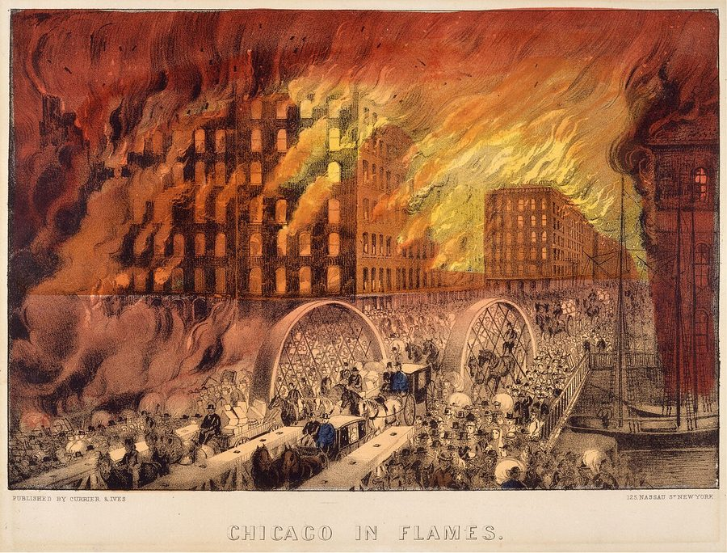
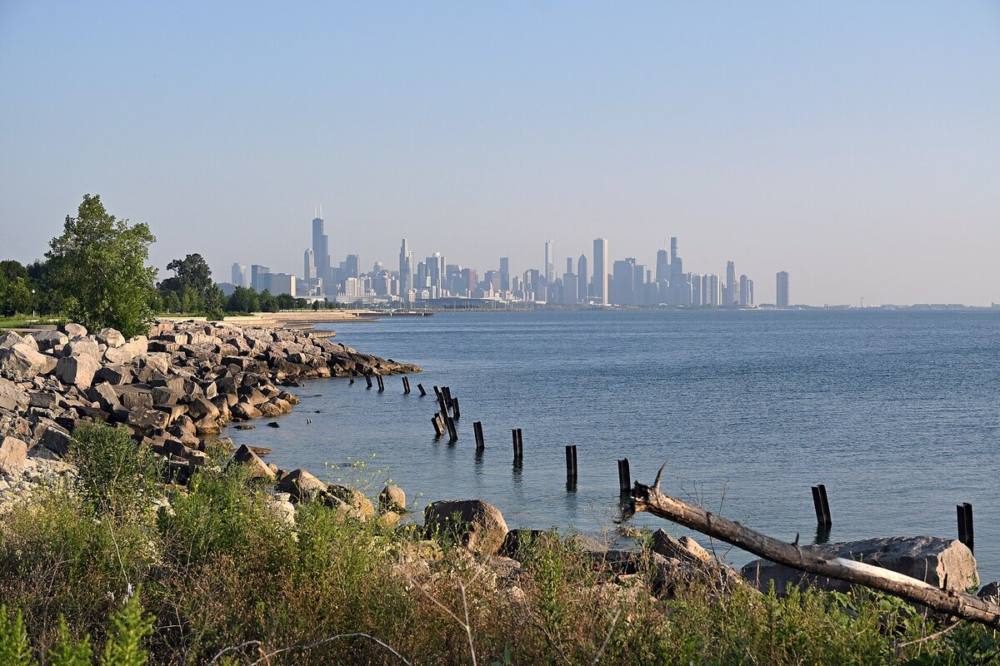

B1 · Travel & Places
Describing Chicago
A lake, a grid, and a fire that let the city rebuild itself in a way nowhere else could.
Play the audio and follow along, then read it again on your own. Tap or hover over a highlighted word to see what it means.
Chicago sits on the southwestern shore of Lake Michigan, which is large enough that standing on the beach in the middle of the city feels like standing at the sea. There is no other side visible. That lake explains a good deal about the place — the weather, the shape of the streets, and the fact that the whole eastern edge of a major American city is public park rather than private property.
The city is laid out on a grid, and once you understand it you cannot get lost. Streets run north–south and east–west, numbered outwards from a single point downtown, and eight blocks make a mile. If somebody tells you an address is at 3200 north, you know exactly how far away it is before you have looked at a map. Visitors from older European cities find this either wonderfully practical or slightly inhuman, and usually both.
The reason Chicago looks the way it does is a fire. In 1871 most of the city burned down over two days — the center was built largely of wood — and the rebuilding happened at exactly the moment when steel frames and passenger lifts made tall buildings possible for the first time. The result is that modern architecture effectively begins here. The first steel-framed skyscraper went up in 1885, and for a century afterwards the city kept competing with itself. You can stand on one corner downtown and see four distinct eras of building without turning your head.

It is a city of neighborhoods rather than a single center, and they are genuinely different from one another. Pilsen is Mexican and covered in murals. Bronzeville was the heart of Black Chicago during the Great Migration, when hundreds of thousands of people moved north from the southern states. Devon Avenue is Indian and Pakistani. Andersonville is Swedish in origin and has kept the shop fronts if not the population. The city is also, historically, one of the most segregated in the country, and that is not an accident of preference — it was built into housing policy for decades and has not undone itself since.
The weather is the thing visitors underestimate. Winter is long and the wind off the lake is genuinely dangerous in January, though the nickname “the Windy City” probably referred to the boastfulness of its politicians rather than the weather. Summer is hot and humid and the entire population moves outdoors at once. Spring and autumn are short and excellent.
The food is more serious than the clichés suggest. Deep-dish pizza exists, and locals eat it perhaps twice a year, mostly with visitors; the everyday pizza is thin and cut into squares. The genuine local specialities are the Italian beef sandwich — thin beef, wet with its own cooking juices, on a roll you have to lean forward to eat — and a hot dog served with a specific list of things that does not include ketchup, about which people are not joking.
What most surprises people is the scale of the public waterfront. Eighteen miles of lakefront are parks, beaches and a path, because in the nineteenth century the city decided the shoreline would stay “forever open, clear and free” and then, unusually, kept to it. On a warm Saturday the beaches are full and the skyline stands directly behind them, which is not a view most cities can offer.

Key Vocabulary
- shore the land along the edge of a sea or lake
- grid a pattern of streets crossing at right angles
- block the distance between two street corners
- downtown the central business district of an American city
- inhuman lacking warmth or human character
- to burn down to be destroyed completely by fire
- steel frame the internal metal structure that lets a building rise high
- skyscraper a very tall building
- era a distinct period of time
- mural a painting made directly on a wall
- segregated with communities kept separate, especially by race
- housing policy the rules governing where homes are built and who may buy them
- humid with a lot of moisture in the air
- boastfulness the habit of talking too proudly about yourself
- cliché an idea repeated so often it has stopped being informative
- waterfront the part of a city that faces the water
- skyline the outline a city's buildings make against the sky
Describing Chicago — B1 · Travel & Places · Renan the Teacher, English Language Academy · https://renangrossi.github.io/englishclasses/reading/b1/maringa.html
Interactive Exercises
Practice
Complete each exercise, then click Submit to see your score and an explanation for every answer.
Speaking & Writing
Discussion
There are no right answers here — use these to practice speaking, or write a short answer to each.
- A grid makes a city easy to navigate and, some say, less human. Which kind of city do you prefer to walk in?
- Chicago rebuilt after a fire and invented something new in the process. Can a disaster genuinely be an opportunity, or is that only visible afterwards?
- The writer says the segregation was built into policy, not chosen. Why does that distinction matter?
- Locals eat deep-dish pizza twice a year. What does your city get famous for that residents rarely do?
- Write about 150 words describing a city you know, explaining one thing about its shape or weather that determines how people live there.